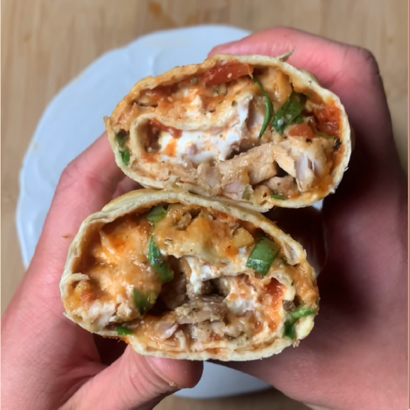

Chicken Parmesan Wraps

NUTRITION FACTS
Per wrap (2)
425 Calories
52g Protein
22g Carbs
17g Fat
INGREDIENTS
- 2 Lavash flatbreads
- 10oz boneless skinless chicken thights
- seasoned with salt, pepper, garlic, onion
- 1 sprit Rosemary, chopped
- 4 basil leaves, sliced
- 30g Parmigianno Reggiano
- 30g 2% mozzarella
- 120g tomato sauce
- 40g blended cottage cheese (optional)
INSTRUCTIONS
- Season chicken thighs and air fry at 375 for 12 mins
- While chicken cooks, prep herbs + cheeses.
Finely chop rosemary, slice basil in to thin
strips. Mix mozzarella and freshly grated
parmesan.
- Grab two Lavash flatbreads and add tomato
sauce, rosemary, basil and cheese mixture
on top. Place chopped chicken on one end
and gently roll in to a wrap.
- Lightly spray with oil, and place air fryer at
375 for 4 mins until golden brown.
- Remove, slice in half, and enjoy!
ADDITIONAL NOTES
- Chicken breast also would work in
place of thighs.
- I highly recommend using fresh rosemary and basil - if you don't
have any on hand you could also
use dried basil/rosemary.
- Cottage cheese is optional, but adds
creaminess.